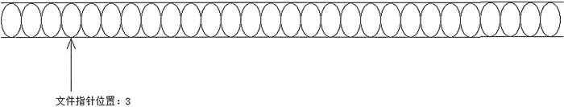
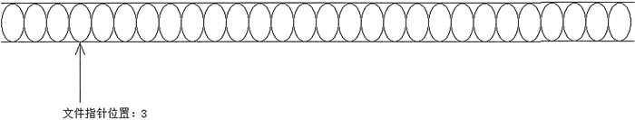

首页 > 编程笔记
Python写入文件（write和writelines）详解
如果以 r+、w、w+、a、a+ 模式打开文件，则都可以写入。需要指出的是，当以 r+、w、w+ 模式打开文件时，文件指针位于文件开头处；当以 a、a+ 模式打开文件时，文件指针位于文件结尾处。
另外，需要说明的是，当以 w 或 w+ 模式打开文件时，程序会立即清空文件的内容。
图 1 简单示意了文件指针的概念。

图 1 文件指针概念示意图
文件对象提供了以下方法来操作文件指针：
此外，当程序使用文件对象读写数据时，文件指针会自动向后移动：读写了多少个数据，文件指针就自动向后移动多少个位置。
下面程序示范了文件指针操作：
当文件指针位于哪里时，程序就会读取哪个位置的数据；当程序读取多少个数据时，文件指针就会自动向后移动多少个位置。
下面程序示范了使用 write() 和 writelines() 输出字符串：
当采用上面方法输出文件时，程序会使用当前操作系统默认的字符集。如果需要使用指定的字符集来输出文件，则可以来用二进制形式（程序先将所输出的字符串转换成指定字符集对应的二进制数据（字节串），然后输出二进制数据）。
下面程序示范了使用二进制数据输出，通过这种方式来实现以 UTF-8 字符集保存文件：
该程序输出的文件内容与上一个程序输出的文件内容相同，只是该程序输出的文件内容是以 UTF-8 字符集保存的。
从上面的程序可以看到，当使用 w+、wb+ 模式打开文件时，会导致文件内容被清空。因此，无论程序运行多少次，其输出的文件内容都只保留最近一次的输出数据。如果程序希望在文件后面追加内容，则应该使用 a+ 或 ab+ 模式。例如如下程序：
每次运行上面程序，都会向 z.txt 文件中追加一段内容；程序运行的次数越多，z.txt 文件的内容就会越多。
另外，需要说明的是，当以 w 或 w+ 模式打开文件时，程序会立即清空文件的内容。
文件指针的概念
文件指针用于标明文件读写的位置。假如把文件看成一个水流，文件中每个数据（以 b 模式打开，每个数据就是一个字节；以普通模式打开，每个数据就是一个字符）就相当于一个水滴，而文件指针就标明了文件将要读写哪个位置。图 1 简单示意了文件指针的概念。

图 1 文件指针概念示意图
文件对象提供了以下方法来操作文件指针：
- seek(offset[, whence])：该方法把文件指针移动到指定位置。当 whence 为 0 时（这是默认值），表明从文件开头开始计算，比如将 offset 设为 3，就是将文件指针移动到第 3 处；当 whence 为 1 时，表明从指针当前位置开始计算，比如文件指针当前在第 5 处，将 offset 设为 3，就是将文件指针移动到第 8 处；当 whence 为 2 时，表明从文件结尾开始计算，比如将 offset 设为 3，表明将文件指针移动到文件结尾倒数第 3 处。
- tell()：判断文件指针的位置。
此外，当程序使用文件对象读写数据时，文件指针会自动向后移动：读写了多少个数据，文件指针就自动向后移动多少个位置。
下面程序示范了文件指针操作：
f = open('filept_test.py', 'rb')
# 判断文件指针的位置
print(f.tell()) # 0
# 将文件指针移动到3处
f.seek(3)
print(f.tell()) # 3
# 读取一个字节，文件指针自动后移1个数据
print(f.read(1)) # o
print(f.tell()) # 4
# 将文件指针移动到5处
f.seek(5)
print(f.tell()) # 5
# 将文件指针向后移动5个数据
f.seek(5, 1)
print(f.tell()) # 10
# 将文件指针移动到倒数第10处
f.seek(-10, 2)
print(f.tell())
print(f.read(1)) # d
上面程序示范了使用 seek() 方法来移动文件指针，包括从文件开头、指针当前位置、文件结尾处开始计算。运行上面程序，结合程序输出结果可以体会文件指针移动的效果。当文件指针位于哪里时，程序就会读取哪个位置的数据；当程序读取多少个数据时，文件指针就会自动向后移动多少个位置。
输出内容
文件对象提供的写文件的方法主要有两个：- write(str 或 bytes)：输出字符串或字节串。只有以二进制模式（b 模式）打开的文件才能写入字节串。
- writelines（可迭代对象）：输出多个字符串或多个字节串。
下面程序示范了使用 write() 和 writelines() 输出字符串：
import os
f = open('x.txt', 'w+')
# os.linesep代表当前操作系统上的换行符
f.write('我爱Python' + os.linesep)
f.writelines(('土门壁甚坚，'+ os.linesep,
'杏园度亦难。'+ os.linesep,
'势异邺城下，'+ os.linesep,
'纵死时犹宽。'+ os.linesep))
上面程序中第 4 行代码调用 write() 方法输出单个字符串；第 5 行代码则调用 writelines() 方法输出多个字符串。当采用上面方法输出文件时，程序会使用当前操作系统默认的字符集。如果需要使用指定的字符集来输出文件，则可以来用二进制形式（程序先将所输出的字符串转换成指定字符集对应的二进制数据（字节串），然后输出二进制数据）。
下面程序示范了使用二进制数据输出，通过这种方式来实现以 UTF-8 字符集保存文件：
import os
f = open('y.txt', 'wb+')
# os.linesep代表当前操作系统上的换行符
f.write(('我爱Python' + os.linesep).encode('utf-8'))
f.writelines((('土门壁甚坚，'+ os.linesep).encode('utf-8'),
('杏园度亦难。'+ os.linesep).encode('utf-8'),
('势异邺城下，'+ os.linesep).encode('utf-8'),
('纵死时犹宽。'+ os.linesep).encode('utf-8')))
上面程序中的代码以 wb+ 模式打开文件，这意味着程序会以二进制形式来输出文件，此时程序输出的必须是宇节串，不能是字符串。因此，程序调用 encode() 方法将字符串转换成字节串，转换时指定使用 UTF-8 字符集，这意味着程序将会以 UTF-8 字符集来保存文件。该程序输出的文件内容与上一个程序输出的文件内容相同，只是该程序输出的文件内容是以 UTF-8 字符集保存的。
从上面的程序可以看到，当使用 w+、wb+ 模式打开文件时，会导致文件内容被清空。因此，无论程序运行多少次，其输出的文件内容都只保留最近一次的输出数据。如果程序希望在文件后面追加内容，则应该使用 a+ 或 ab+ 模式。例如如下程序：
import os
f = open('z.txt', 'a+')
# os.linesep代表当前操作系统上的换行符
f.write('我爱Python' + os.linesep)
f.writelines(('土门壁甚坚，'+ os.linesep,
'杏园度亦难。'+ os.linesep,
'势异邺城下，'+ os.linesep,
'纵死时犹宽。'+ os.linesep))
上面程序以 a+ 模式打开指定文件，这意味着以追加模式来打开文件，因此，使用 open() 函数打开文件后，不会立即清空文件内容，并且会将文件指针移动到文件结尾处，程序会在文件结尾处追加内容。每次运行上面程序，都会向 z.txt 文件中追加一段内容；程序运行的次数越多，z.txt 文件的内容就会越多。
关注公众号「站长严长生」，在手机上阅读所有教程，随时随地都能学习。内含一款搜索神器，免费下载全网书籍和视频。

微信扫码关注公众号